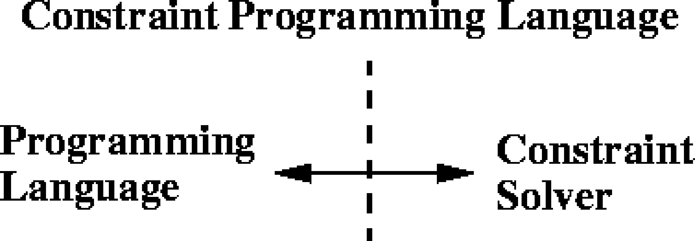

Constraint-Programmierung – Grundlagen
Johannes Brauer
Created: 2017-09-16 Sat 15:27
Begriffe
Hier verwendete und weiterführende Literatur:
Einschränkung (constraint)
- Eine Einschränkung (constraint) stellt eine Beziehung zwischen verschiedenen Unbekannten (Variablen) her. Jede Variable kann Werte aus einem gegebenen Wertebereich (domain) annehmen.
- Eine Einschränkung beschreibt gegebenes Wissen über die Werte der Variablen.
- Eine Einschränkung beschreibt, welche Beziehung gelten muss, ohne eine Berechnungsprozedur dafür anzugeben, wie die Einhaltung der Beziehung erzwungen werden kann.
- Beispiel aus dem täglichen Leben: Terminabsprachen
Erfüllbarkeit (satisfiability)
- erfüllbar:
- Es existiert eine Lösung für die Einschränkungen.
- nicht erfüllbar:
- Es existiert keine Lösung für die Einschränkungen.
| \(X \leq 3 \wedge Y = X + 1\) | erfüllbar |
| \(X \leq 3 \wedge Y = X + 1 \wedge Y \geq 6\) | nicht erfüllbar |
Lösungsverfahren
- Zwei Lösungsstrategien
- constraint satisfaction
- constraint solving
- Constraint-satisfaction behandelt Probleme über endlichen Wertemengen. Schätzungsweise mehr als 95% aller industriellen CP-Anwendungen benutzen endliche Domänen.
- Constraint-solving behandelt Probleme über nicht endlichen Wertebereichen. Vgl. z.B. den Fahrenheit-Celsius-Konverter.
- Während beim Constraint-satisfaction kombinatorische Methoden zum Einsatz kommen, werden beim Constraint-solving mathematisch-analytische Verfahren benutzt (Differentiation, Integration, Taylor-Reihen etc.).
Constraint-satisfaction
Prinzip
Ein Constraint-satisfaction-Problem (CSP) wird definiert durch:
- eine Menge von Variable \(X=\{x_{1},...,x_{n}\}\),
- für jede Variable \(x_{i}\), eine endliche Menge \(D_{i}\) möglicher Werte (Domäne)
- eine Menge von Einschränkungen (constraints), die Werte, die die Variablen gleichzeitig annehmen können, einschränken
Beispiel: \[X=\{1,2\}, Y=\{1,2\}, Z=\{1,2\}\] \[X = Y, X \neq Z, Y > Z\]
Lösung eines CSP: Belegung jeder Variablen mit einem Wert aus ihrer Menge, so dass alle Einschränkungen erfüllt sind.
Beispiel: \[X=2, Y=2, Z=1\]
Systematische Suche
- Grundsätzlich kann ein CSP durch systematisches Durchsuchen des Lösungsraums gelöst werden.
- Ein solches Verfahren ist simpel aber ineffizient.
- Zwei Varianten:
- Generate & Test (GT): Eine Belegung aller Variablen wird erzeugt und geprüft.
- Backtracking (BT): Schrittweise Erweiterung korrekter Teillösungen zur Gesamtlösung.
Generate & Test
- Grundlegendes Verfahren zur Lösung von CSPs
- Algorithmus:

Nachteile:
- dummer Generator
- Nichterfüllbarkeit wird spät erkannt.
Backtracking
- Partielle Lösung wird schrittweise zur vollständigen erweitert.
- Algorithmus (vereinfacht):
- Nachteile:
- thrashing, d.h. wiederholte Fehlbelegung
- Nichterfüllbarkeit wird spät erkannt.
Anwendungsbeispiel für GT und BT
Aufgabenstellung: \[X=\{1,2\}, Y=\{1,2\}, Z=\{1,2\}\] \[X = Y, X \neq Z, Y > Z\]
Generate & Test
| X | Y | Z | Prüfung |
|---|---|---|---|
| 1 | 1 | 1 | fehlgeschlagen |
| 1 | 1 | 2 | fehlgeschlagen |
| 1 | 2 | 1 | fehlgeschlagen |
| 1 | 2 | 2 | fehlgeschlagen |
| 2 | 1 | 1 | fehlgeschlagen |
| 2 | 1 | 2 | fehlgeschlagen |
| 2 | 2 | 1 | erfüllt |
Backtracking
| X | Y | Z | Prüfung |
|---|---|---|---|
| 1 | 1 | 1 | fehlgeschlagen |
| 2 | fehlgeschlagen | ||
| 2 | fehlgeschlagen | ||
| 2 | 1 | fehlgeschlagen | |
| 2 | 1 | erfüllt |
Optimierungen der systematischen Suche
- Grundidee: Entfernung von inkonsistenten Werten aus der Wertemenge einer Variablen
- Repräsentation von binären und unären Einschränkungen durch Graphen:
- Knoten
- Variablen
- Kanten
- Einschränkungen
- Prüfung der
- Knotenkonsistenz (Entfernung von Werten im Widerspruch zu unären Einschränkungen)
- Kantenkonsistenz (dito für binäre Einschränkungen)
- Pfadkonsistenz

- Optimierung der Suche nach wie vor Forschungsgegenstand
Constraint Logic Programming (CLP)
Vorbemerkungen
- Traditionelle Logikprogrammierung kennt nur eine Art von Constraint: Logische Äquivalenz über Termen
- Constraint-Logikprogrammierung unterstützt weitere Arten von Constraints:
- Constraints über endlichen Wertebereichen (finite domains, CLP(FD)),
- Constraints über Mengen (CLP(Set)),
- …
- Unifikation von Variablen wird ersetzt durch Prüfung der Erfüllbarkeit (satisfaction) von Constraints.
- Der typische Lösungsweg in der Constraint-Logikprogrammierung:
- Analyse des zu lösenden Problems, um zu verstehen, aus welchen Teilen es besteht.
- Bestimmung der Bedingungen/Relationen, die zwischen den Teilen gelten: Diese sind der Schlüssel zur Lösung, weil mit ihrer Hilfe das Problem modelliert wird.
- Formulierung der Bedingungen/Relationen als Gleichungen; der Charakter der Gleichungen kann Hinweise auf die Art des zu verwendenden C(L)P-Systems geben.
- Lösung der Gleichungen; dies geschieht in der Regel transparent für den Benutzer, da die Sprache einen „eingebauten” Löser benutzt.
- Typische Anwendungsbereiche:
- Anwendungen, für die keine effizienten Algorithmen existieren (NP-completeness)
- Anwendungen, deren Problemspezifikation sich häufig ändert: hier sollte einfach möglich sein, das Programm schnell zu ändern (rapid prototyping).
- Anwendungen, die Entscheidungsunterstützung erfordern – entweder automatisch durch das Programm und in Kooperation mit dem Benutzer. Viele Entscheidungen können durch mathematische Formeln codiert werden, aber nicht alle.
- konkret: Planung, Ressourcen-Zuweisung, Logistik/Transport, Schaltkreisentwurf und -verifikation, Zustandsmaschinen, Finanzwesen, Verarbeitung raumbezogener Daten (Navigation), …
Implementierung
Sprachschnittstellen
- Benutzung einer Bibliothek, die Gleichungen, Variablen etc. implementiert, in einer Wirtssprache

- Benutzung einer Sprache mit erweiterter Semantik: Variablen können zu anderen in Beziehung gesetzt werden und unbestimmete Werte enthalten.

Anforderungen an CP-Sprachen
- Es muss ein Constraint-solver zur Verfügung stehen, der Gleichungen löst bzw. ihre Unlösbarkeit mitteilt.
- Sprachmittel für die Formulierung von Gleichungen, Formeln etc.
- Eine Schnittstelle zum Constraint-solver, die es erlaubt, Einschränkungen zu übermitteln und Lösungen entgegen zu nehmen.
Beispiel: Send more money
Mehr Geld bitte!
Sie senden einen Brief an Ihre Eltern mit dem Inhalt:
SEND
+MORE
-----
MONEY
Wieviel Geld erhalten Sie?
Die Aufgabe besteht darin, jedem Buchstaben aus \(\{S,E,N,D,M,O,R,Y\}\) eine unterschiedliche Ziffer aus \(\{0,...,9\}\) zuzuordnen, so dass die Gleichung \[SEND+MORE=MONEY\] erfüllt wird.
Aufgabe: Lösen Sie das Problem in einer Programmiersprache Ihrer Wahl! Beachten Sie Nebenbedingungen.
Lösungsansatz: „Rohe Gewalt“
- Alles durchprobieren!
- Man braucht 8 ineinander geschachtelte Schleifen.
- Achtung: Acht Variablen (
S,E,N,D,M,O,R,Y) können zehn verschiedene Werte annehmen. Ergibt \(10^{8}\) Möglichkeiten. - Allerdings verringern einschränkende Bedingungen die Zahl der Möglichkeiten:
SundMdürfen nicht \(0\) sein.- Da
Mals Übertrag entsteht, kannMnur \(1\) sein. - Die Werte der Variablen müssen paarweise verschieden sein.
- Weitere logische Überlegungen über Zusammenhänge zwischen den Ziffern können das Verfahren beschleunigen (s. u.).
- Lösung z. B. in Smalltalk:
| z1 z2 z3 used | used := Set new. 1 to: 9 do: [:s | used add: s. 0 to: 9 do: [:e | (used includes: e) ifFalse: [ used add: e. 0 to: 9 do: [:n | (used includes: n) ifFalse: [ used add: n. 0 to: 9 do: [:d | (used includes: d) ifFalse: [ used add: d. 1 to: 1 do: [:m | (used includes: m) ifFalse: [ used add: m. 0 to: 9 do: [:o | (used includes: o) ifFalse: [ used add: o. 0 to: 9 do: [:r | (used includes: r) ifFalse: [ used add: r. 0 to: 9 do: [:y | (used includes: y) ifFalse: [ z1 := 1000 * s + (100 * e) + (10 * n) + d. z2 := 1000 * m + (100 * o) + (10 * r) + e. z3 := 10000 * m + (1000 * o) + (100 * n) + (10 * e) + y. z1 + z2 = z3 ifTrue: [ Transcript show: ' ',z1 printString; cr; show: '+',z2 printString; cr; show: '---------';cr; show: z3 printString; cr]]]. used remove: r ]]. used remove:o ]]. used remove: m ]]. used remove: d]]. used remove: n]]. used remove: e]]. used remove:s].
Lösungsansatz: Constraint Satisfaction
- Einfaches Modell durch Spezifikation der folgenden Gleichung als Einschränkung: \[1000*S+100*E+10*N+D \] \[+ 1000*M+100*O+10*R+E \] \[= 10000*M+1000*O+100*N+10*E+Y\]
- Den Variablen \(E, N, D, O, R, Y\) wird die Domäne \(\{0 \ldots 9\}\), der Variablen \(S\) die Domäne \(\{1 \ldots 9\}\) und \(M\) die Domäne \(\{1\}\) zugeordnet.
- Außerdem muss die Einschränkung \(all\_different([S,E,N,D,M,O,R,Y])\) hinzugefügt werden.
- Das Modell ist nicht effizient, weil alle Variablen bis auf eine schon belegt sein müssen, bevor die „Haupteinschränkung” geprüft werden kann.
Implementierung in Prolog …
… unter Nutzung der Constraint Logic Programming over Finite Domains Library
:- use_module(library(clpfd)). %Nutzung der Constraint Logic % Programming over Finite Domains Library sendmore(Digits) :- Digits = [S,E,N,D,M,O,R,Y], % Liste der Variablen Digits ins 0..9, % Zuordnung von Wertebereichen an Variablen S #\= 0, % Constraint: S muss ungleich 0 sein, ... M #\= 0, % ebenso M all_different(Digits), % alle Elemente von Digits müssen % unterschiedliche Werte haben 1000*S + 100*E + 10*N + D % Haupt-Constraint + 1000*M + 100*O + 10*R + E #= 10000*M + 1000*O + 100*N + 10*E + Y, label(Digits). % sorgt für die Belegung aller Variablenwerte
Implementierung in Standard-Prolog
select(X, [X|R], R). select(X, [Y|Xs], [Y|Ys]):- select(X, Xs, Ys). assign_digits([], _List). assign_digits([D|Ds], List):- select(D, List, NewList), assign_digits(Ds, NewList). smm :- X = [S,E,N,D,M,O,R,Y], Digits = [0,1,2,3,4,5,6,7,8,9], assign_digits(X, Digits), M = 1, S > 0, 1000*S + 100*E + 10*N + D + 1000*M + 100*O + 10*R + E =:= 10000*M + 1000*O + 100*N + 10*E + Y, write(X).
Verfeinertes CSP-Modell
Nutzung der Überträge der Addition für die Zerlegung der „großen“ Einschränkung in mehrere kleine:
\begin{eqnarray*} E+D & = & Y+10*C1 \\ C1+N+R & = & E+10*C2 \\ C2+E+O & = & N+10*C3 \\ C3+S+M & = & 10*M+O \end{eqnarray*}Die Domänen der Variablen:
\begin{eqnarray*} E,N,D,O,R,Y & := & \{0,\ldots,9\} \\ S & := & \{1,\ldots,9\} \\ M & := & \{1\} \\ C1,C2,C3 & := & \{0,1\} \end{eqnarray*}- Die „kleinen“ Einschränkungen werden während der Belegungsphase früher geprüft und damit inkonsistente Belegungen ausgeschlossen.
Implementierung in Prolog …
… unter Nutzung der Constraint Logic Programming over Finite Domains Library
:- use_module(library(clpfd)). %Nutzung der Constraint Logic % Programming over Finite Domains Library sendmore(Digits) :- Digits = [S,E,N,D,M,O,R,Y], Carries = [C1, C2, C3], % Liste der Überträge Digits ins 0..9, S #\= 0, M #\= 0, Carries ins 0..1, % Überträge können nur 0 oder 1 sein all_different(Digits), E + D #= Y + 10 * C1, C1 + N + R #= E + 10 * C2, C2 + E + O #= N + 10 * C3, C3 + S + M #= 10 * M + O, label(Digits).
Implementierung in C++ (ILOG Solver)
#include <ilsolver/ctint.h> CtInt dummy = CtInit(); CtIntVar S(1, 9), E(0, 9), N(0, 9), D(0, 9), M(1, 9), O(0, 9), R(0, 9), Y(0, 9); CtIntVar* AllVars[]= {&S, &E, &N, &D, &M, &O, &R, &Y}; int main(int, char**) { CtAllNeq(8, AllVars); CtEq( 1000*S + 100*E + 10*N + D + 1000*M + 100*O + 10*R + E, 10000*M + 1000*O + 100*N + 10*E + Y); CtSolve(CtGenerate(8, AllVars)); PrintSol(CtInt, AllVars); CtEnd(); return 0; }
Constraint solving mit SWI-Prolog
Die clpr-Library erlaubt die Verwendung eines Constraint-Lösers für nicht-endliche Wertebereiche.
Darlehensberechnung
- Berechnung von Annuitäten-Darlehen (Beispiel entnommen aus Fruehwirth2010)
- Bedeutung der Größen:
- D:
- Höhe des Darlehens
- T:
- Laufzeit in Monaten
- Z:
- Zins pro Monat
- R:
- Höhe der monatlichen Rate
- S:
- Restschuld nach der Laufzeit T
Lösung SWI-Prolog
:- use_module(library(clpr)). darlehen(D, T, Z, R, S) :- {T=0, D=S}. % nach 0 Monaten ist die Restschuld gleich der Darlehenshöhe darlehen(D, T, Z, R, S) :- {T>0, T1 = T-1, D1 = D + D*Z - R}, darlehen(D1, T1, Z, R, S). % nach einem Monat werden die Laufzeit und die Darlehenshöhe reduziert.
Fragen:
darlehen(100000,360,0.01,1025,S).liefertS=12625.90).darlehen(D,360,0.01,1025,0).liefertD=99648.79.{S=<0}, darlehen(100000,T,0.01,1025,S).liefertT=374, S=-807.darlehen(D,360,0.01,R,0).sollteR=0.0102861198*Dliefern.
Der Celsius-Fahrenheit-Konverter
:- use_module(library(clpr)). cf(C, F) :- {9*C=5*(F-32)}.
Anwendungen:
?- cf(25,F). F = 77.0 ?- cf(C, 77). C = 25.0 ?- cf(15, 77). false.
Lösungsverfahren verwenden – besser als Aufgabe